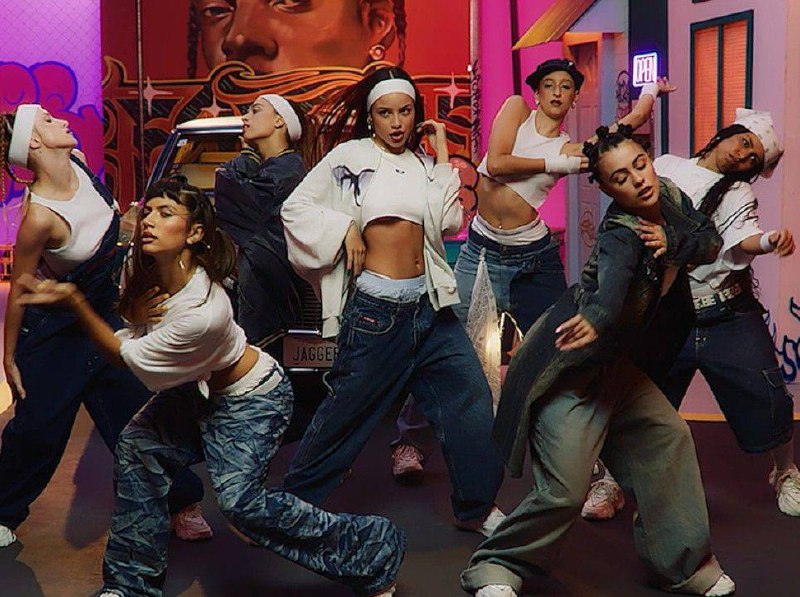

Хип-хоп
15 марта 2024
Уличный танец, зародившийся в Нью-Йорке в 1970-х годах. Это часть культуры хип-хоп (наряду с рэпом и диджеингом). Отличается энергичными движениями, раскачкой (bounce), четкой координацией и импровизацией. Основная цель — самовыражение и взаимодействие с ритмом музыки.